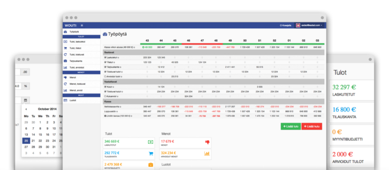

Wouti
Koodasin Wouti-kassavirtatyökalun harjoitusprojektina 2014. Se toimikin ihan hyvin, mutta loppujen lopuksi päädyin hyllyttämään projektin. Kassavirran hallinnassa tuunattu Google Sheets -dokumentti toimii kaikkein parhaiten.
Mitä on kassavirta?
Vaikka asiallinen kirjanpito onkin tärkeää, kirjanpitojärjestelmän dokumenteista ei ole operatiivisessa johtamisessa juuri mitään iloa. On ihan sama miten päin tulos ja tase ovat, jos yrityksellä ei ole rahaa maksaa palkkoja seuraavan kuun lopussa. Kirjanpito kertoo kyllä miten meni, mutta kassavirtalaskelma kertoo minne ollaan menossa. Kiireisenä yrittäjänä tiedät itsekin, että kannattaa mieluummin tuijottaa tulevaisuuteen kuin mietiskellä menneen kuukauden koettelemuksia.
Kokemuksesta voin myös sanoa, että kun kassavirta näyttää pelkkää vihreää viivaa pitkälle seuraavaan vuoteen, kaikki muutkin olennaiset talousluvut asettuvat kivasti pian vihreälle. Vastaavasti, jos kone yskii koko ajan punaisella, tiedät että perusjutuissa on jotain pahasti pielessä. Kassavirtaprojektio tuo selkeyttä ja kuria.
Tein kassavirrasta kiinnostuneille yrittäjille aiheeseen liittyvän ilmaisen kassavirtaoppaan ja sen lisäksi maksullisen videokurssin.
 Kirjoittajasta
Kirjoittajasta